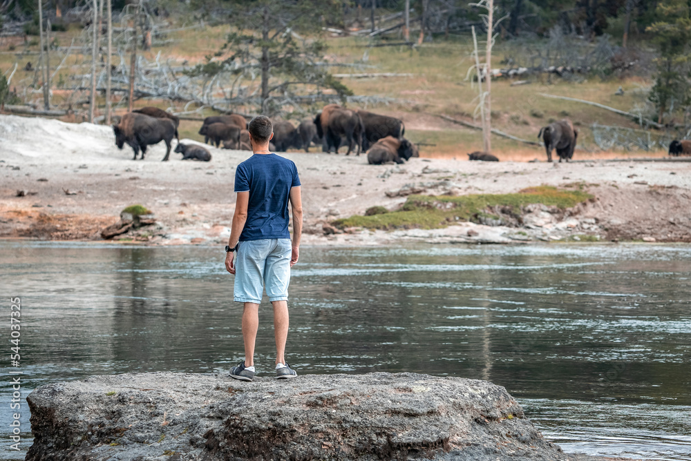

PARK STEWARDSHIP
America's national, state, and local parks are the crown jewels of our natural heritage. Bright Wheeler Group brings decades of experience in park management, combining operational excellence with environmental stewardship. We understand that managing these treasured landscapes requires a delicate balance between visitor access, resource protection, and financial sustainability.
From iconic national parks to urban green spaces and regional recreation areas, our team delivers comprehensive management solutions that protect natural resources while creating unforgettable visitor experiences. We take our role as stewards seriously, implementing sustainable practices that preserve these spaces for future generations.

FACILITIES & MAINTENANCE
Proper maintenance is the backbone of successful park management. Our comprehensive facilities management program ensures that park infrastructure remains safe, functional, and aesthetically pleasing for all visitors. From restrooms and trailheads to visitor centers and maintenance facilities, we keep every component operating at peak performance.
- Preventative maintenance programs
- Restroom and comfort station upkeep
- Trail and pathway maintenance
- Building and facility repairs
- Vehicle and equipment fleet management
- Utility and infrastructure oversight

SUSTAINABILITY & CONSERVATION
Environmental stewardship is at the heart of everything we do. Our sustainability programs reduce environmental impact, protect natural resources, and educate visitors about conservation. We implement green practices across all park operations, from waste reduction and energy efficiency to habitat restoration and native species protection.
- Habitat restoration projects
- Invasive species management
- Waste reduction and recycling programs
- Energy efficiency initiatives
- Water conservation practices
- Environmental education and outreach

VISITOR EXPERIENCE
Creating memorable, meaningful visitor experiences is our passion. We design and deliver programs, services, and amenities that connect people with nature, inspire exploration, and create lasting memories. From interpretive programs and guided tours to special events and educational activities, we ensure every visitor leaves with a deeper appreciation for our parks.
- Interpretive programs and guided tours
- Junior ranger and youth programs
- Special events and festivals
- Educational workshops and classes
- Volunteer and citizen science programs
- Visitor information and wayfinding
Ready to elevate your park operations?
Let's discuss how Bright Wheeler Group can help you protect and enhance your park's natural and cultural resources.
Get In Touch